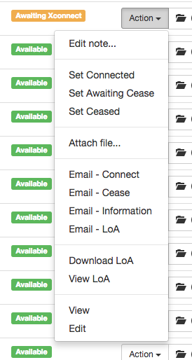
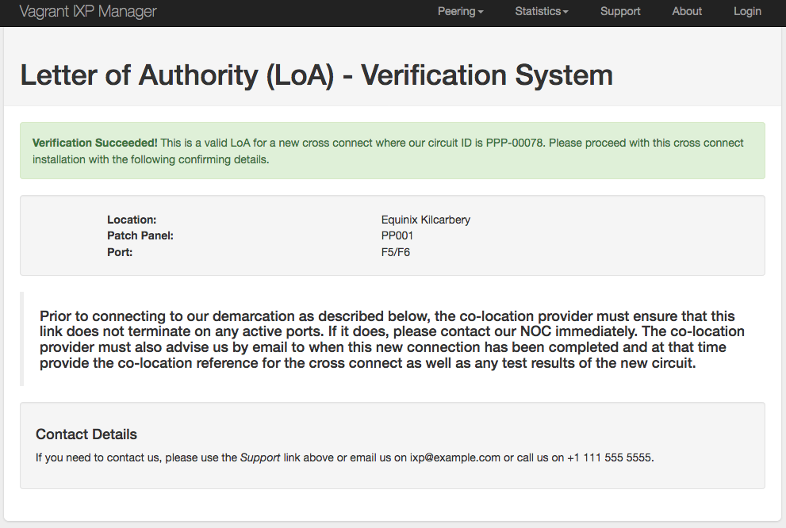
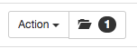
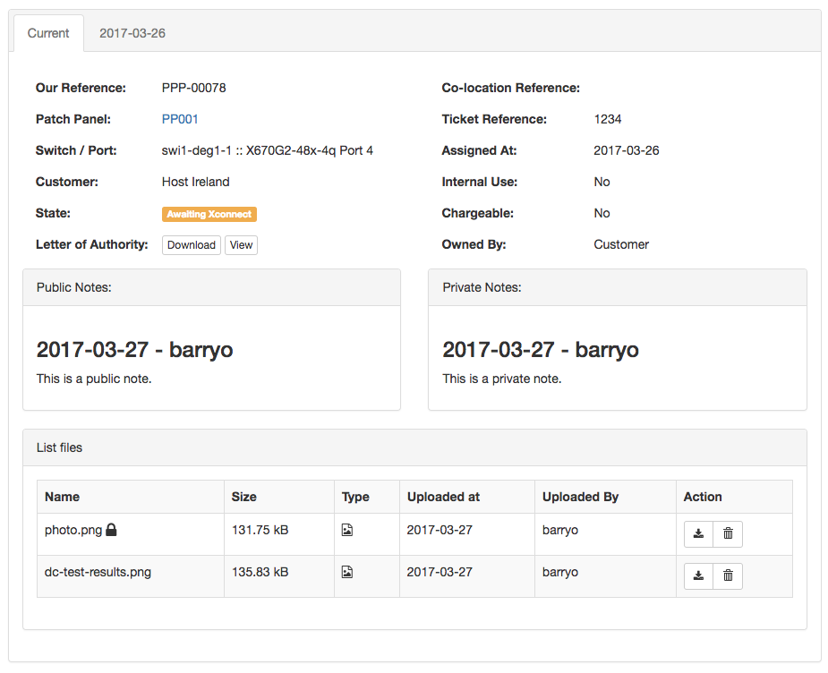

Patch Panels / Cross Connects
One of the more difficult things for an IXP to manage is the sheer volume of patch panels / cross connects they need to manage. We have approached the issue a number of times in IXP Manager but abandoned the attempt every time. Typically our original solutions were over-engineered where all we really needed was something which could replace a spreadsheet per panel.
We believe we have now developed a feature complete and useful means of managing patch panels and associated cross connects.
Features
- Add / edit patch panels (which includes cable and connector types).
- List associated patch panel ports which includes:
- their state (such as available / prewired, awaiting cross connect, connected, awaiting cease, reserved, broken).
- associated customer and/or switchport.
- co-location provider's circuit reference.
- internal ticket references.
- Transition ports from available / prewired to awaiting x-connect to connected to awaiting cease to ceased and then available again.
- Customer view of their cross connects.
- Public (visible to customers) and private notes per cross connect.
- Attach public and private files to cross connects (such as test results, completion documents, order forms, etc).
- Maintain complete history of a patch panel port.
- Generate and email LoAs (as PDF) with a URL verification function for co-location providers.
- Generate emails for connection and cease requests as well as an email providing full customer view of a cross connect.
- Typically fibre ports are duplex ports but there is a growing use of BiDi optics meaning simplex ports. Our implementation treats all ports as simplex but you can mark it as duplex and set its partner port.
Duplex Fibre Ports
We suggest adding fibre ports as two ports per duplex port. I.e. if your patch panel has 12 duplex ports, enter this as 24 ports. When allocating ports later, you can set it as a duplex port and select its partner / slave port. This will future proof your patch panels for the growing use of bidi optics and other simplex based xWDM fibre solutions.
From our experience, duplex fibre ports are often identified as their individual strands. For example, duplex port 5 would be referenced as F9/F10.
Your mileage may vary on this but we need to allow this flexibility to cover both use-cases. You always have options however:
- you can change the presentation of how these ports are referenced externally by skinning the templates.
- you have the option to edit emails before they are sent to also present this as you wish.
- you can chose to treat duplex ports as single ports rather than doubling them up.
- when you have duplex ports on a patch panel, IXP Manager will provide a duplex view by default with a CSS-based toggle to reveal the typical partner ports.
- if you think IXP Manager can make this easier, please talk to us. But we cannot cover every use case programmatically. We've opted to allow flexibility rather than dictate a particular format.
Adding a Patch Panel
The following image shows a typical add a new patch panel form (as of v4.3). You'll note that clicking Help provides detailed context aware help messages.

Most of this is self-explanatory but:
- By default, we set the Colocation Reference to the Patch Panel Name. We are not sure it's a good idea for IXPs to create a second name different to the co-location provider's but this option is available to you. Seriously, think about what you are doing here - more references means more confusion! The cabinet and cable type is displayed in the list of patch panels so even with obscure data centre references, it should be easy to find what you need.
- Location Notes: Data centre / co-location providers do a lot of weird, wonderful and strange things! They provide multiple references for a single patch panel (IXP cabinet, MMR, etc.), they get taken over and re-reference everything or even provide no discernible reference. The field is a freetext field that will be included (and parsed as Markdown) in all emails generated by IXP Manager to help you help them identify a patch panel!
In addition to that, we will also use a cabinets U's are counted from top/bottom, and a patch panel's U position and mounted at front/rear to also create a location description. * When setting the Number of Ports, ensure you count duplex fibre ports as two ports. So 12 duplex fibre ports would be entered as 24. When editing a patch panel, this input field represents the number of additional ports you want to add to a patch panel and thus defaults to 0 in that situation. * Port Name Prefix: This is an optional field intended for use on fibre patch panels. As an example, you may wish to prefix individual fibre strands in a duplex port with F which would mean the name of a duplex port would be displayed as F1/F2. * Chargeable: Usually IXPs request their members to come to them and bear the costs of that. However, sometimes a co-location facility may charge the IXP for a half circuit or the IXP may need order and pay for the connection. Setting this only sets the default option when allocating ports to members later. The options are Yes / No / Half / Other.
Filtering Patch Panel Ports
Quite often, all you are looking for is a free in a particular location (data centre) or cabinet of a particular cable type (UTP / SMF / etc.).
IXP Manager makes this easy from the Patch Panels page via the top right button labeled Filter Options. When clicked, this yields an advanced search as follows:
Cabinets auto-fills when you chose (or change) a location.
Patch Panel Port States
A patch panel port can have the following states:
- Available: The port is free and available for use.
- Prewired: This is equivalent to available but it means the port is prewired to a given switchport (you set the port when setting the prewired status). This is useful for IXPs that prewire a bunch of ports to avoid remote hands costs / data centre visits.
- Awaiting Xconnect: Port has been assigned to a member and we are awaiting the co-location provider to install the cross connect. In this state, context aware actions such as emailing connection requests, LoA generation and Set Connected are all available.
- Connected: Connected and in use.
- Awaiting Cease: This connection is no longer required and we are awaiting the end user / co-location provider to cease the connection.
- Ceased: You will never see a ceased state. When a cross connect is marked as ceased, it's current state is archived (for history, include files) and the port is reset to Available. We do not revert to Prewired but an information message is shown to the user to hint this.
- Reserved: Useful to mark particular ports as off limits for whatever reason.
- Broken
- Other
Free / Available Ports
IXP Manager will colour ports in the Available, Prewired and Awaiting Cease states are green allowing an easy visual indication of available ports.
Patch Panel Port Lifecycle
Patch panel ports start as either available or prewired. The context menu in these states is:

- Unset Prewired is available as this port has a Prewired status. Clicking this reverts it to plain Available and disassociates it from the prewired port.
- Edit Note... is always available and provides a pop up to edit public and private notes associated with the port (current lifecycle - ceased ports have their notes at that time archived and cleared).
The main lifecycle option here is Allocate:

-
Description: A one line short description to be shown in the list of patch panel ports. Just enough to help explain the ports purpose. Detailed information should be placed in the notes section. Can also be used to explain a reserved / broken / other port. Note that this is parsed as Markdown. NB: A description is discouraged for customer ports connected to a switch. The customer name and switch port are the description.
-
Colocation Circuit Reference: this is the reference provided by the colocation provider to uniquely reference this cross connect.
-
Ticket Reference(s): This is a free text field to be used by IXPs as they wish. The intended use is to enter helpdesk ticket references that relate to this cross connect order.
-
Duplex connection?: Clicking this allows you to select the slave port for duplex connections.
-
Switch / Switch Port / Customer: You have a number of options when allocating a port:
-
If the port is pre-wired then the switch / switch port will be set here.
- If you chose a switch port which has been allocated to a customer, then this patch panel port will also be allocated to that customer. The backend logic will detect if this is the case and update the customer field.
- Conversely, if you chose a customer first, the switch / switch port dropdowns will be populated with only that customer's assigned ports.
- Sometimes you will get cross connects that are not intended to be connected to peering switches (e.g. connections to co-located customer equipment, IXP metro connections, etc.). In these cases, just select the customer (and if it's the IXP itself, select the IXP customer) and leave switch / switch port unselected.
-
If you need to reset these fields, just click either of the Reset button.
-
Patch Panel Port Status: when allocating a port, this will allow you to set the state to Awaiting Xconnect or Connected.
-
Physical Interface Status: this is not depicted above. If the selected switch port has already been assigned to a customer by way of a physical interface, you will have the option to update this here also.
-
Public and Private Notes: Public notes are available to the customer. Both fields are interpreted as Markdown.
-
Chargeable: Usually IXPs request their members to come to them and bear the costs of that. However, sometimes a co-location facility may charge the IXP for a half circuit or the IXP may need order and pay for the connection. The options are Yes / No / Half / Other. How individual IXPs use this is up to them.
-
Internal Use: Marks the port as used by the IXP itself. E.g. metro connections.
-
Owned By: Useful indication for billing and cease requests. Should represent the contractural owner of the cross connect. One of: Customer, IXP, Service Provider, Data Centre, Other. Service Provider might be a metro provider where they ordered the cross connect.
Once a port is allocated, it enters the Awaiting XConnect / Connected state and there are additional context menu options available:

The three lifecycle actions are:
- Set Connected: updates the status (and allows you to add public/private notes). You next action after this should be Email - Connect.
- Set Awaiting Cease: mark the port and pending disconnection. Your next action after this should be Email - Cease.
- Set Ceased: this is a transitive state in that it doesn't stick. When you mark a patch panel as ceased, the existing details (including files and notes) are archived as part of the port's history and then port is then cleared and made available again.
File Attachments
Over the lifetime of a cross connect - and particularly when it is being ordered, there may be files exchanges between you and your customers or the colocation provider. These can be added to the patch panel port via the Attach File... option.
The dialog will dynamically determine the maximum file upload size based on your PHP settings. To alter this, change the following in your server's appropriate php.ini:
; Maximum allowed size for uploaded files.
upload_max_filesize = 40M
; Must be greater than or equal to upload_max_filesize
post_max_size = 40M
Please search the internet for further help as this is outside the scope of IXP Manager documentation.
The following features apply to file attachments:
- they are archived along with the port history when a cross connect is ceased.
- they are stored under
$IXPROOT/storage/files/ppp. - two files of the same name cannot be uploaded for a single patch panel port.
- they can be marked as public or private:
- public files are accessible to the customer through their own dashboard.
- public files are attached to the Email - Information email.
LoA Generation
Many co-location providers will not accept a cross connect order without a LoA (Letter of Agency/Authority) from the party to whom the cross connect is to be delivered (typically the IXP).
IXP Manager will generate a PDF LoA to download or include in the emails it generates for you. Here is an example:
You will need to skin this yourself to change the legalese, address and contact details and potentially add a logo. See the version INEX uses here (which includes and embedded PNG logo).
Note that Dompdf is used to turn the HTML template into a PDF and it has some restrictions.
You have two options for generating LoAs (without having IXP Manager email them):
- Download PDF: downloads the PDF via your browser.
- View PDF: displays the PDF LoA in your browser (where browser supports it).
LoA Verification
The stock LoA template (and INEX's version) includes a link that allows co-location browsers to click on to verify its veracity.
On successful verification, the end user sees:

Email Generation
IXP Manager allows you to send four emails related to patch panels / cross connects (port status dependent). These are listed below. The Email editor looks as follows:

Note that:
- the option to attach a PDF LoA is a checkbox.
- the email is written in Markdown with a preview available. The email is sent as both HTML (from the Markdown) and the plaintext version.
The four email templates available are:
- Email - Connect: Email the customer a request to order a cross connect to the given demarcation points. A LoA is attached as a PDF by default unless you uncheck the box in the email editor.
- Email - Cease: Email the customer a request to cease a cross connect.
- Email - Information: Email the customer all details on file about a cross connect. We often get requests for this at INEX and this simplifies the process. The generated email includes:
- the standard details regarding port and co-location reference;
- public notes;
- public files as attachments.
- Email - LoA: Email a LoA to the customer as attached as a PDF. This is similar to Email - Connect but it is more reflective of a typical response to a second request for a LoA.
All email templates can be skinned for your own needs. See INEX's example skins here.
Viewing Patch Panel Details and Archives
Each patch panel port row has the following button:

The number in the badge indicates how many historical records are available.
Clicking on the button yields the following view screen:

Development History
The Patch Panels functionality was developed during Q1 2017 and added in March 2017. This was made possible from sponsorship which enabled us to hire a new full time developer. We are especially grateful to our sponsors - please see them here.